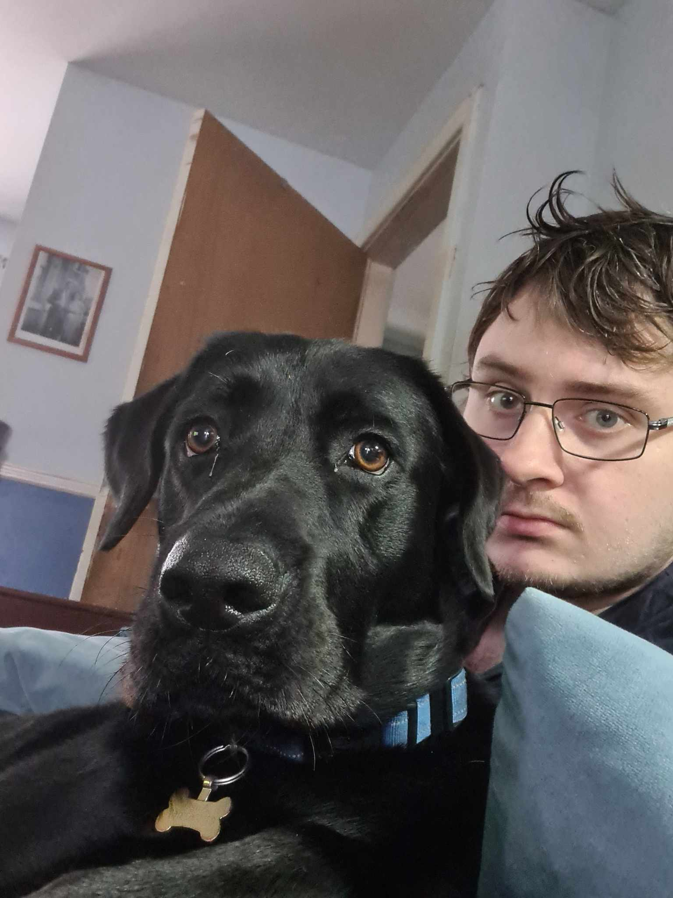
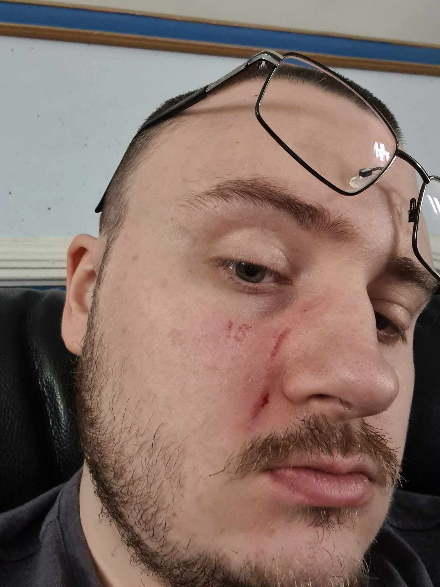

As made evident by some of the upcoming images, it will be mdae clear that Angle is the most precious being in the known universe
Angel has had an immense impact on Josh's mental health, as having such a wonderous ball of unconditional love ready to overwhelm him at a moments notice gives a noticeable reprive of the sharpness of living daily life
They share a wonderful bond that has stood the test of time throughout the good times and the bad
Oh yes, as with all things, the story of Josh and Angle is one of ups and downs
Sometimes Angel will hurt Josh in his exuberance
And other times Josh will intentionally crap his belt with the sole desire to make Angel feel genuine terror in his tiny little heart